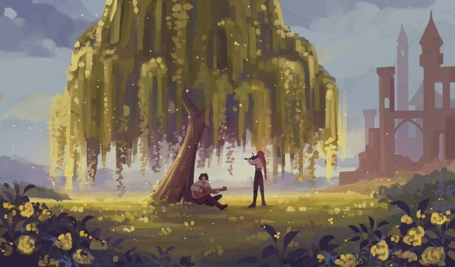

Fanfiction noval written by blujamas, also known online as thcscus. Well written to the point where an artist made an animatic for the story. We like to write fiction about our favorite shows or media because it allows us to explore the characters, stories, and worlds that we love in our own creative ways. It gives us the chance to imagine new adventures, create different endings, and explore what might happen if the story took another direction. Writing fiction also helps us connect more deeply with the characters and express our own thoughts, feelings, and ideas through them. It allows us to escape into a world we enjoy, share our creativity with others, and bring our imaginations to life. Most importantly, writing about our favorite media lets us continue enjoying the stories we love even after they end, while making them feel personal and meaningful to us.